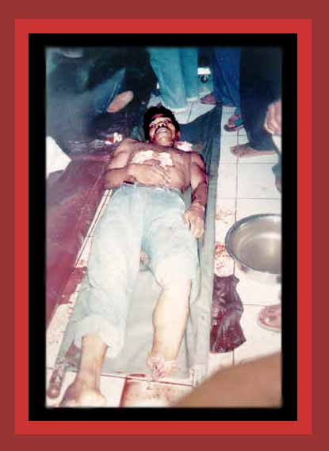

| Indonesia invaded East Timor in 1975 and has since waged an off and on struggle against Timorese fighting for independence. Indonesian forces and death squads have murdered over a hundred thousand Timors, such as Fernando Cardoso (27) shown here, killed and mutilated by a death squad at Manutasi. For documentation, see Statistics of Democide. Source: "Indonesia's Death Squads: Getting Away With Murder". |